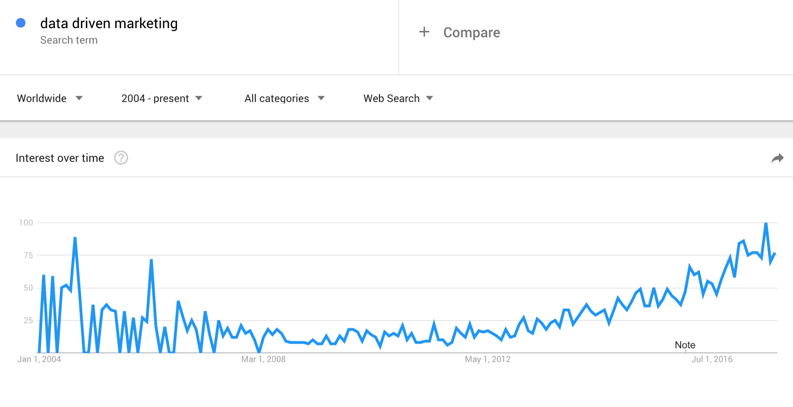

Data is important to modern marketing.
When young marketing professionals ask what they should learn to get ahead, you are almost certain to hear data literacy as core skill for advancement.
The Chief Martech 2017 Marketing Technology Landscape has over 5000 companies listed—up from 150 in just 2011. All of those add or use data in some way.
Google Trends shows a steady increase in interest in “data-driven marketing” over the past decade. The spikes in interest just before the decade look like special cause problems in the data collection—the alternating months of zero interest with interest almost on par with today is what makes those numbers suspect.

All of this is to say that data is important to marketing today.
What if we’re not data driven, but numbers driven?
When we talk about data, we usually talk about numbers, but it’s important to remember that data does not equal numbers.
We have quantitative and qualitative data: numbers and text (or audio, or qualitative numbers).
Qualitative data, when applied to marketing, includes things like open-ended surveys and all sorts of text and audio data generated during phone calls.
When a marketing leader boasts about being data driven, are they including interviews and open-ended surveys? Usually, the answer is no.
They are numbers driven. They want to maximize revenue and minimize expenses and use a lot of intermediary marketing metrics to get there on the way.
This might be a safe way to manage marketing, but it’s not the best.
What if being numbers driven is bad?
The most important equation to any business is this:
Profit = Revenue - Expenses
You don’t need to make a profit every quarter, or even every decade (just ask Amazon). But you need to understand this equation to plan for future success.
Optimizing for the numbers isn’t likely result in a healthy business whether you are optimizing for P = R - E or for leads, marketing qualified leads, or opportunities.
Controversial?
Superficially, yes. But it’s the logical conclusion of lessons most marketers have already internalized.
Say, for example, a SaaS company wants to minimize expenses. They can halve the headcount of the support department and instantly reduce expenses and increase profit. The executives can pay themselves bonuses and happily move on to their next brilliant plan.
However, the newly downsized support department can’t keep up with demand for support.
- Tickets now take longer to be resolved.
- Some of your customers grow unhappy.
- Some costly problems fester unsolved.
- Morale in the support department crashes which further undermines service.
The end result is that customers start to churn (or they share their experiences with their peers and you lose out on deals without measuring or knowing it).
By optimizing for numbers you’ve undercut the business. And you’ve done so in a way that results in short-term executive rewards. But the end result is lower revenue and profit.
The point of this example isn’t to say that numbers are bad or that you can’t use numbers.
It is to remind you that numbers are abstractions of reality.
You could very easily look at the P = R - C equation and decide to analyze support requests and change your product or site to reduce the number of support calls that are made and achieve cost savings the same way.
Conversely, you can come up with much less obviously bad examples where, for example, you increase short-term sales in a way that causes support to suffer, craters your reputation and reduces long-term revenue.
P = R - C correlates perfectly with profit. But it does not cause profit.
Your leads, marketing qualified leads, and opportunities are even more poorly correlated with profit. Making numbers-driven decisions to optimize for any of these things is even more dangerous.
KPIs are abstractions. They are correlated with business success. But they don’t cause that success.
The Repeated, Colossal Failure of Marketing Data
Numbers-driven marketing is responsible for ruining marketing. And we do it over and over again without learning.
Banner ads used to actually work. What made them drop to a 0.03 percent average click-thru rate (most of which are bots or accidental clicks because how often do you actually click on ads)?
We optimized for numbers rather than for the experience. Instead of trying to create ads that drew the right people in, we made ads flashier and more garish relevance-be-damned.
People learned and stopped paying attention. We kept optimizing our conversion rates down hundredths of a percent.
New, personalized video tactics being used in ABM will no doubt go the same way. Writing someone’s name on a handheld whiteboard is going to get attention and get your pitch heard.
Personalized video vendors will start sharing how following these personalized video best-practices improve metrics. Everyone will jump in with canned pitches that don’t reflect the extra level of care that these tactics originally embodied and we’ll optimize those videos out of relevance.
Plato, the Allegory of the Cave, and Data-Driven Marketing
Plato’s Allegory of the Cave is the classical illustration of the problem with treating abstractions of reality as if they are real. (I’ll admit that Plato’s idea of forms is different, but that doesn’t make the allegory any less poignant.)
In The Allegory of the Cave, in case you need a refresher, there are a row of people staring at the wall of a cave. Behind them is a fire and some puppets projecting shadows on the wall.
The people staring at the wall see the shadows and believe that to be reality. They even talk amongst themselves and reinforce their belief that the shadow is reality.
The shadows are the numbers used in numbers-driven marketing absent any context from qualitative data. They are representations of reality.
The people interacting with your marketing are the reality that produce those numbers.
Why would you base decisions strictly off of representations when it is easy to give those numbers meaning by turning away from that wall and looking at what causes shadows?
Talking to your sales and customer service reps isn’t enough. They are dealing with a different set of people.
Early- and mid-career professionals frequently ignite sales cycles internally without ever appearing on the buying committee that speaks with sales.
The main technology users that customer service reps meet are rarely more than a fraction of the buying committee.
Data from sales and customer service reps is better than nothing, but it doesn’t compare with qualitative data gained through direct contact with the people in your funnels.
Qualitative Context Gives Number Meaning
Interviewing leads at various stages of your funnel provides the context that gives all of your numbers meaning.
Increasing your lead to marketing qualified lead conversion rate won’t necessarily increase revenue. You might just end up sending more bad leads to sales and waste more time.
Pairing qualitative data on what motivates your leads and what needs or doubts that they have gives you the context to create better experiences and know that your improved metrics represent real improvements to the experience of becoming a customer and not just shadows without concrete meaning.
The best thing about qualitative data is that you don’t need a lot of it for it to be useful. Each interview will return many insights which you can then use to run A/B tests and quantify the improvement all while knowing that the lift in conversion rate is actually related to causing downstream revenue improvements.
Without qualitative context, quantitative data has no value.
Going from Numbers Driven to Data Driven
There is a lot of value in the numbers that marketing generates, but to fully take advantage of that value you need to understand the context in which numbers occur.
The good news is that these ideas I’ve presented here aren’t in any way new and they certainly aren’t mine. They are built on product management practices tested by companies like Intercom and Basecamp which are in turn built on manufacturing practices that have been around since the end of the Second World War.
And because others have blazed the trail, we can learn and build from their experiences.
Jobs-to-be-Done thinking provides some ideas for getting past the superficial needs to understand the motivations. What job is are people hiring my product for? JTBD theory was conceived to engineer and market innovative products and services that people want without falling into the trap of delivering what they think they want.
Why can’t we apply it to our marketing funnels? What jobs do people hire your webinars to do? Your demos? Your free trials?
An important part of JTBD theory is figuring out what causes people to fire their current solution.
Another one is figuring out what job comes next after they’ve hired a solution.
These are fundamental problems facing enterprise marketers and JTBD theory provides ideas for using qualitative data to understand and overcome them.
JTBD theory is based on Systems Thinking.
Systems Thinking is credited for the post WWII renaissance of Japanese manufacturing (and its originator, W. Edwards Deming, predicted its downfall when the Japanese started sending their brightest to get MBAs in the West).
Lean manufacturing, Kanban, Six Sigma are some of its direct offspring which means that it can also share a claim of ancestry for agile software development.
How might enterprise marketers, who have to sell to multiple buyers with multiple influencers going through long, drawn out buying processes apply a way of looking at management (and the world) that embraces the interdependencies within systems?
We have buyer personas and funnels. But how well do we understand the relationships between personas and business processes? How well do we understand how change affects those relationships? And how well do your funnels represent reality?
Systems Thinking provides ideas for understanding interdependencies so that we can better structure our own marketing systems and understand how to influence the corporate social ecosystem.
Atomic or Ecological
Business thought is divided between the atomic view, where every division is a cog in the machine and every person in the division is another cog within that greater part, and the ecological view, where affecting one part of the system can have many, unpredictable effects on other parts.
A numbers-driven approach to marketing is within the atomic view. A whole data approach that includes qualitative context is within the ecological view.
Systems Thinking is the most influential ecological view of business management and Jobs-to-be-Done thinking is an application of Systems Thinking to product management and product marketing.
Design Thinking is a recent ecological response to the problems of atomized design that also provides plenty more ideas that we could use to design enterprise marketing experiences.
The Internet has primed buyers to expect ecological experiences when they buy but enterprise marketers are still struggling to adapt relying on models adapted from consumer marketing.
All of these disciplines are great sources of ideas for making your marketing more data driven and less numbers driven.
If you need some help getting started or you’re overwhelmed, Caret Juice Marketing offers a guaranteed interview and insights package to help you get started with data-driven marketing in a way that limits risk and commitment. We narrowly apply these ideas by interviewing 10 people who completed a recent conversion event and then report on the insights from those interviews.
You can then decide whether the insights are worth it and decide whether to pay and continue working with Caret Juice.